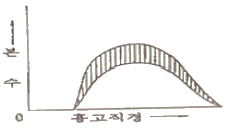
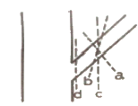
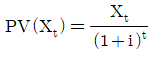
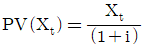
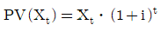
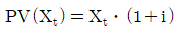
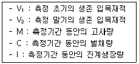

산림산업기사 (2013-06-02 기출문제)
1과목: 조림학
1. 산벌작업의 작업순서로 맞는 것은?
- 하종벌 → 후벌 → 예비벌 → 갱신완료
- 후벌 → 예비벌 → 하종벌 → 갱신완료
- 하종벌 → 예비벌 → 후벌 → 갱신완료
- 예비벌 → 하종벌 → 후벌 → 갱신완료
(정답률: 95%)

2. 다음 그림은 무슨 간벌법인가?

- 하층간벌
- 수관간벌
- 택벌식 간벌
- 기계적 간벌
(정답률: 92%)
3. 다음 중 하층간벌에 대한 설명으로 가장 거리가 먼 것은?
- 가장 오랜 역사를 지닌 간벌방법으로 보통간벌이라고 한다.
- 우세목 중 결점이 있는 2급목만 벌채하는 방법이다.
- 일반적으로 양수성의 수종으로 구성된 임분에 적용된다.
- 처음에는 피압된 가장 낮은 수관층의 나무를 벌채하고 그 후 점차 높은 층의 나무를 벌채하는 방법이다.
(정답률: 72%)
4. 최근 목재로써 인기가 높은 편백의 조림 적지를 가장 잘 나타낸 것은?
- 한대지방
- 온대중부지방
- 온대북부지방
- 온대남부, 난대지방
(정답률: 75%)
5. 하목 식재 수종의 구비요건에 대한 설명으로 거리가 먼 것은?
- 내음성이 클 것
- 가지가 적은 수종일 것
- 소목이라도 약간의 이용가치가 있을 것
- 낙엽의 비효가 클 것
(정답률: 69%)
6. 뿌리의 근류를 가지는 것만으로 나열된 것은?
- 아까시나무, 리기다소나무, 향나무
- 갈매나무, 싸리나무, 소나무
- 오리나무, 보리수나무, 소귀나무
- 물푸레나무, 오동나무, 자귀나무
(정답률: 69%)
7. 노천매장법으로 파종하기 한 달쯤 전에 매장하는 것이 발아촉진에 도움을 주는 수종이 아닌 것은?
- 소나무
- 낙엽송
- 삼나무
- 가래나무
(정답률: 63%)
8. 파종하기 전에 종자의 정착 및 발아, 그리고 어린묘목의 발육이 잘 되도록 하기 위하여 정지작업을 한다. 이 작업의 진행 순서는?
- 쇄토 → 밭갈이 → 작상
- 밭갈이 → 쇄토 → 작상
- 작상 → 쇄토 → 밭갈이
- 쇄토 → 작상 → 밭갈이
(정답률: 73%)
9. 삽목의 발근이 용이한 수종은?
- 소나무
- 잣나무
- 참나무류
- 은행나무
(정답률: 60%)
10. 조림 수종을 선택하는 요건으로 틀린 것은?
- 성장속도가 빠르고 재적성장량이 높은 것
- 지하고가 낮고 조림의 실패율이 적은 것
- 가지가 가늘고 짧으며, 줄기가 곧은 것
- 입지에 대하여 적응력이 큰 것
(정답률: 69%)
11. 다음 수종 중 생가지치기를 할 경우 부후의 위험성이 가장 높은 수종은?
- 단풍나무
- 소나무
- 일본잎갈나무
- 삼나무
(정답률: 87%)
12. 자작나무, 오리나무의 발아시험기간은 얼마나 되는가?
- 14일간
- 21일간
- 28일간
- 42일간
(정답률: 65%)
13. 1년생 묘가 상당한 크기에 이르고 공간을 차지하는 수종의 파종방법은 줄로 뿌려주는 조파로 한다. 다음 중 조파로 하지 않는 수종은?
- 밤나무
- 느티나무
- 아까시나무
- 옻나무
(정답률: 69%)
14. 밤나무를 조림 할 때 수분수를 혼식해야 한다. 수분수는 주품종의 몇%정도 식재하는 것이 가장 적합한가?
- 10~20%
- 20~30%
- 30~40%
- 40~50%
(정답률: 56%)
15. 수정이 되어서 종자가 성숙되어 가는 과정 가운데 배유안에서 분화되서 자엽, 유아, 배축, 유근 등을 형성한다. 이 때 다음 침엽수종 가운데 자엽의 수가 가장 많은 것은?
- 소나무
- 측백나무
- 향나무
- 주목
(정답률: 59%)
16. 한 임분을 구성하고 있는 임목 중 성숙한 임목만을 국소적으로 추출·벌채하고 그곳의 갱신이 이루어 지게 하는 갱신법으로 어떤 설정된 갱신기간이 없고 임분을 항상 각 영급의 나무가 서로 혼생하도록 하는 작업방법은?
- 택벌작업
- 산벌작업
- 모수작업
- 중림작업
(정답률: 93%)
17. 묘포장을 설계할 때 침엽수종의 경우 토양산도(pH)는 어느 정도가 알맞은가?
- pH 3.0~4.0
- pH 5.0~6.5
- pH 7.0~8.5
- pH 9.0~10
(정답률: 80%)
18. 다음 그림은 잣나무의 가지치기를 나타낸 것이다. a, b, c, d 중 잣나무의 가지치기 방법으로써 가장 좋은 방법은?

- a
- b
- c
- d
(정답률: 79%)
19. 칼슘이온의 양이온치환용량 1 M.E.(milliequivalenet:Meq)의 양은? (단, 칼슘의 원자량은 40 이고 원자가는 2 이다)
- 2g
- 4g
- 0.02g
- 0.2g
(정답률: 53%)
20. 산림이 발휘하는 공익적 기능이 아닌 것은?
- 홍수나 산사태를 방지한다.
- 이산화탄소를 흡수하고 산소를 방출한다.
- 파티클 보드의 원료로 이용된다.
- 휴양의 기회를 제공한다.
(정답률: 97%)
2과목: 산림보호학
21. 새집을 인공적으로 조성하려고 한다. 박새류 집의 입구구멍의 크기(지름)로 가장 적당한 것은?
- 2.8cm
- 5.8cm
- 8.8cm
- 11.8cm
(정답률: 64%)
22. 파이토플라스마에 의한 수병은?
- 대추나무 빗자루병
- 소나무 잎떨림병
- 밤나무 눈마름병
- 포플러 잎녹병
(정답률: 88%)
23. 살충제의 주제를 용제에 녹여 계면활성제를 유화제로 첨가하여 제재한 살충제 제형은?
- 유제(emulsifiable concentrate)
- 수화제(wettable power)
- 분제(dust)
- 액제(liquid)
(정답률: 82%)
24. 천적을 선택할 때 구비조건으로 적당치 않은 것은?
- 증식력이 큰 것
- 해충 출현과 그 생활사가 일치되는 것
- 성비가 작은 것
- 2차 기생봉이 없는 것
(정답률: 86%)
25. 다음 중 유충으로 월동하는 것은?
- 소나무 좀
- 버즘나무방패벌레
- 오리나무잎벌레
- 솔수염하늘소
(정답률: 44%)
26. 다음 중 볕데기를 입기 쉬운 수종이 아닌 것은?
- 오동나무
- 호두나무
- 굴참나무
- 가문비나무
(정답률: 85%)
27. 아황산가스 피해에 형향을 끼치는 요인이 아닌 것은?
- 광도
- 온도
- 상대습도
- 식물의 내한성
(정답률: 73%)
28. 난균에 의하여 발생하는 수목병이 아닌 것은?
- 모잘록병
- 뿌리썩음병
- 탄저병
- 역병
(정답률: 67%)
29. 모잘록병균의 전반에 중요한 역할을 하는 것은?
- 곤충
- 토양
- 바람
- 새
(정답률: 88%)
30. 해충 가운데 침엽수와 활엽수를 모두 가해하는 것은?
- 솔나방
- 집시나방
- 텐트나방
- 미국흰불나방
(정답률: 58%)
31. 정주성 내부기생선충 종으로 정착한 주변 세포를 비정상적으로 비대하게 만들어 하나의 영양 저장고로 이용하는 기작을 가지고 있으며 밤나무, 오동나무 등의 묘목을 재배한 묘포에서 많이 발생하는 것은?
- 소나무재선충
- 뿌리썩이 선충
- 뿌리혹선충
- 스턴트 선충(Stunt-nematode)
(정답률: 84%)
32. 미국흰불나방의 월동 형태는?
- 유충
- 번데기
- 성충
- 알
(정답률: 86%)
33. 다음 중 소나무재선충의 중간 매개충은?
- 왕바구미
- 노린재
- 하늘소류
- 소나무 좀
(정답률: 86%)
34. 다음 중 한해(drought injury)에 가장 피해를 받기 쉬운 수종은?
- 서어나무
- 자작나무
- 소나무
- 오리나무
(정답률: 41%)
35. 다음 중 밤을 가해하는 종실해충은?
- 미국흰불나방
- 버들재주나방
- 매미나방
- 복숭아명나방
(정답률: 93%)
36. 다음 중 내화력이 강한 수종은?
- 은행나무
- 소나무
- 아까시나무
- 삼나무
(정답률: 78%)
37. 미국흰불나방은 1년에 몇 회 발생하는가?
- 1회
- 2회
- 3회
- 6회
(정답률: 86%)
38. 밤바구미와 같은 종실가해 해충 방제에 효과적인 약제의 사용 방법은?
- 액제 시용
- 입제 살포
- 분제 시용
- 훈증 처리
(정답률: 62%)
39. 메타 20%, 유제 100cc를 원액의 농도가 0.1%로 희석하려고 할 때 필요한 물의 양은 몇 cc인가?
- 1000
- 10000
- 19900
- 29900
(정답률: 73%)
40. 병원균이 수목의 기공을 통하여 침입하는 병은?
- 소나무류 잎떨림병
- 목재 썩음(부후)병
- 밤나무줄기마름병
- 모잘록병
(정답률: 72%)
3과목: 임업경영학
41. Schneider 공식에 의한 재적 성장률 공식에서 흉고직경이 28cm 인 나무는 상수 K를 얼마로 하는 것이 오차를 적게 하는 방법인가?
- 400
- 450
- 500
- 550
(정답률: 37%)
42. t 년도에 발생하는 예상수익(Xt)을 할인율(i)로 현재가치[PV(Xt)]화하는 계산식은?




(정답률: 56%)
43. 임업자산 중 가치가 가장 큰 것은?
- 묘목
- 임지
- 임목축적
- 비료
(정답률: 76%)
44. 우리나라 산림의 수종별 분포에서 면적이 가장 큰 산림은?
- 침엽수림
- 활엽수림
- 혼효림
- 죽림
(정답률: 74%)
45. 공·사유림 경영계획에서 실시하는 산림조사 시 표준지면적은 최소 몇 ha인가?
- 0.02ha
- 0.04ha
- 0.06ha
- 0.08ha
(정답률: 59%)
46. 임분의 구성인자를 다음과 같이 정의할 때 초기재적에 대한 총생장량을 계산하는 식으로 적합한 것은?(오류 신고가 접수된 문제입니다. 반드시 정답과 해설을 확인하시기 바랍니다.)

- V2 + M + V - I - V1
- V2 + M + C - V1
- V2 + C - I V1
- V2 + C - V1
(정답률: 38%)
47. 산림조사의 지황조사에 포함되지 않는 것은?
- 지리
- 경사도
- 지위
- 풍속
(정답률: 72%)
48. 금년에 1,000만원의 간벌수입이 있었다. 연이율이 6%라 할 때, 10년 후의 후가는 약 얼마인가? (단, (1+0.06)10은 1.7908이다)
- 17,908,000원
- 10,600,000원
- 10,000,000원
- 7,908,000원
(정답률: 74%)
49. 손익분기점 분석 시 필요한 가정으로 틀린 것은?
- 제품의 판매가는 생산량에 따라 변한다.
- 제품 단위당 비용은 일정하다.
- 재고는 없다.
- 제품의 생산능률은 변함이 없다.
(정답률: 80%)
50. 단위면적에서 수확되는 목재생산량이 최대가 되는 연령을 벌기령으로 하는 방법은?
- 토지 순수익 최대의 벌기령
- 수익률 최대의 벌기령
- 재적수확 최대의 벌기령
- 화폐수익 최대의 벌기령
(정답률: 86%)
51. 수고 측정에서 삼각법을 응용한 수고 측고기는?
- 와이제 측고기
- 아소스 측고기
- 크리스튼 측고기
- 블루메라이스 측고기
(정답률: 77%)
52. 임지생산력(지위)의 평가방법이 아닌 것은?
- 토양인자를 종합하여 판단하는 방법
- 연령에 의한 방법
- 지표식물에 의한 방법
- 우세목 또는 준우세목 수고에 의한 방법
(정답률: 60%)
53. 표준지의 면적을 정하는 방법에서 중경목은 전체의 면적의 몇%를 차지하는가?
- 5%
- 10%
- 15%
- 20%
(정답률: 49%)
54. 일반적으로 매목조사에서는 주로 무엇을 측정하는가?
- 부피
- 수고
- 흉고직경
- 입목도
(정답률: 71%)
55. 공·사유림 경영계획에 있어서 임목생산을 위한 기준벌기령으로 맞는 것은? (단, 산업비림은 제외한다)(관련 규정 개정전 문제로 여기서는 기존 정답인 1번을 누르면 정답 처리됩니다. 자세한 내용은 해설을 참고하세요.)
- 잣나무 60년
- 참나무류 60년
- 낙엽송 30년
- 리기다소나무 30년
(정답률: 50%)
56. 투자 비용의 현재가에 대하여 투자의 결과로 기대되는 현금유입의 현재가 비율을 나타내어 투자효율을 결정하는 방법은?
- 순현재가치법
- 투자이익률법
- 내부투자수익률법
- 수익·비용률법
(정답률: 34%)
57. 임업경영의 성과를 분석하는 데 있어서 틀린 설명은?
- 나무의 생육기간은 오랜 시일이 걸리기 때문에 다른 일반적인 경영에서와 같이 짧은 기간 동안의 성과를 명확하게 계산할 수 없는 경우가 많다.
- 임업경영의 성과를 해마다 분석하는 것은 특별한 일이 없는 한 피하는 것이 좋다.
- 임업경영의 성과는 임가소득, 임업소득 또는 임업 순수익으로 파악할 수 있다.
- 경영성과를 분석하는 것은 앞으로의 경영개선을 위하여 매우 중요한 것이다.
(정답률: 75%)
58. 수종을 조사하여 임목의 배열상태를 명백히 하고 침엽수림·활엽수림 또는 침활혼효림으로 나누는 것은?
- 임상
- 임종
- 임지
- 임령
(정답률: 71%)
59. 주업적 임업경영 형태 중 벌채노동에 대한 특수훈련과 벌채·하산에 쓰이는 기계·기구의 장비가 필요한 유형의 경영형태는?
- 식재→육림→임목매각
- 식재→육림→벌채→원목매각
- 식재→육림→벌채→표고생산·제탄·제재
- 식재→육림→벌채→원료원목공급(제지)
(정답률: 49%)
60. 육림비에서 육림기간 중 얻은 수입의 원리합계를 공제한 것은?
- 임업소득
- 임가소득
- 임목원가
- 임업조수익
(정답률: 56%)
4과목: 산림공학
61. 기계화 발전수준을 비교할 수 있는 기계화지수를 구하는 방법에 해당하지 않는 것은?
- Skogarbeten 법
- 단위생산당 기계비용법
- 단위면적당 에너지 투입량에 의한 방법
- 단위면적당 장비유지비용법
(정답률: 49%)
62. 다음 중 횡당배수구를 설치하는 장소로 부적합한 것은?
- 흙이 부족하여 속도랑으로서는 부적당한 곳
- 구조물의 앞이나 뒤
- 외쪽물매 때문에 옆도랑물이 역류하는 곳
- 대류수가 없는 곳
(정답률: 56%)
63. 평면도상에 있어서 임도곡선의 종류가 아닌 것은?
- 단곡선
- 복심곡선
- 배향곡선
- 종단곡선
(정답률: 77%)
64. 다음 중 임도의 설계순서로 맞는 것은?
- 예비조사→답사→예측→실측→설계
- 예측→예비조사→답사→실측→설계
- 답사→예비조사→예측→실측→설계
- 답사→예측→예비조사→실측→설계
(정답률: 88%)
65. 임도의 비탈면보호공법 중 주로 흙쌓기비탈면의 보호 및 녹화에 이용되는 것은?
- 선떼붙이기공법
- 떼단쌓기공법
- 줄떼다지기공법
- 띠떼심기공법
(정답률: 39%)
66. 다음 콘크리트의 강도에 대한 설명으로 맞는 것은?
- 콘크리트의 양생기간이 짧을수록 좋은 콘크리트를 얻을 수 있다.
- 콘크리트의 압축강도는 재령 28일의 강도를 표준으로 한다.
- 가급적 물-시멘트비를 65% 이상으로 하는 것이 강도에 좋다.
- 콘크리트가 굳을 때까지 형태를 유지시켜 주는 구조물을 동바리라 한다.
(정답률: 69%)
67. 계간사방 계획 중 재해가 발생되었을 때 하류의 가옥과 경지 등을 복구하기 위한 계획은?
- 경상계획
- 예방계획
- 응급계획
- 민생계획
(정답률: 63%)
68. 사방댐의 방수로에 대한 설명으로 틀린 것은?
- 방수로의 높이는 댐어깨보다 낮아야 한다.
- 방수로의 높이는 댐마루보다 낮아야 한다.
- 방수로 양옆의 물매는 1:2를 표준으로 한다.
- 방수로의 위치는 계류의 중심부에 설치하는 것이 원칙이다.
(정답률: 50%)
69. 강선에 의한 집재방법에 대한 설명 중 틀린 것은?
- 시설비용이 적다.
- 사용수명이 길다.
- 무겁거나 큰 나무의 집재가 곤란하다.
- 길이 10m 정도 이상의 장재의 집재가 가능하다.
(정답률: 58%)
70. 원목을 집재하기 위하여 차대 틀 위에 원목을 얹어 싣고 가는 집재기를 무엇이라 하는가?
- 스키더
- 펠러번처
- 포워더
- 야더집재기
(정답률: 60%)
71. 최대 홍수 유량 산정 시 합리식을 이용한 유량값은 몇m3/sec 인가? (단, 유출계수 0.80, 강우 강도 90mm/hr, 유역면적 10ha 이다.)
- 복원중(정확한 보기 내용을 아시는분께서는 오류 신고를 통하여 내용 작성부탁 드립니다.)
- 복원중(정확한 보기 내용을 아시는분께서는 오류 신고를 통하여 내용 작성부탁 드립니다.)
- 복원중(정확한 보기 내용을 아시는분께서는 오류 신고를 통하여 내용 작성부탁 드립니다.)
- 복원중(정확한 보기 내용을 아시는분께서는 오류 신고를 통하여 내용 작성부탁 드립니다.)
(정답률: 11%)
72. 다음의 와이어의 꼬임 중 보통 Z 꼬임은?
(정답률: 61%)
73. 다음 중 산림작업경비에 해당하지 않는 것은?
- 인건비
- 관리비
- 재료비
- 기계비
(정답률: 52%)
74. 1m 깊이의 하천 내의 유속이 수면으로부터 20cm 깊이에서는 1.10m/sec, 60cm 깊이에서는 0.92/sec, 바닥에서의 유속은 0.64m/sec 이었다면, 종유속곡선이 포물선에 가까울 때 이 수로의 평균 유속은 몇 m/sec인가?
- 0.87
- 0.89
- 0.92
- 1.10
(정답률: 60%)
75. 돌망태에 대한 설명으로 틀린 것은?
- 돌망태는 굴요성이 좋다.
- 돌망태는 작업실행이 쉽다.
- 돌망태는 표면의 조도가 작다.
- 돌망태는 내구성이 부족한 단점이 있다.
(정답률: 73%)
76. 기계톱의 안전장치라고 할 수 없는 것은?
- 스프라켓
- 핸드가드
- 안전드로틀
- 자동체인브레이크
(정답률: 67%)
77. 임도공사 시 발생하는 토적을 양단면평균법에 의하여 구하면 몇 m3 인가? (단, 양단의 단면적 A1= 25m2, A2= 35m2, 양단면 사이의 거리는 18m 이다.)
- 540
- 440
- 340
- 240
(정답률: 63%)
78. 물 침식을 우수침식, 하천침식, 지중침식, 바다침식으로 구분했을 때 우수침식에 속하지 않는 것은?
- 면상침식
- 누구침식
- 구곡침식
- 용출침식
(정답률: 86%)
79. 임도의 기능에 대한 설명으로 틀린 것은?
- 산림과 시장, 마을 등을 연결하며 임산물과 인적자원을 수송하는 기능
- 산림시업을 효율적으로 실행하기 위한 기능
- 공도에서 산림을 연결하는 노선이 지니고 있는 기능
- 임내 작업로의 기능을 갖는 일시적 시설로의 기능
(정답률: 62%)
80. 황폐지에 설치하는 사방댐의 축조 목적이 아닌 것은?
- 산각고정
- 종횡침식의 방지
- 계상물매의 완화
- 계곡물의 저장 및 저류
(정답률: 65%)